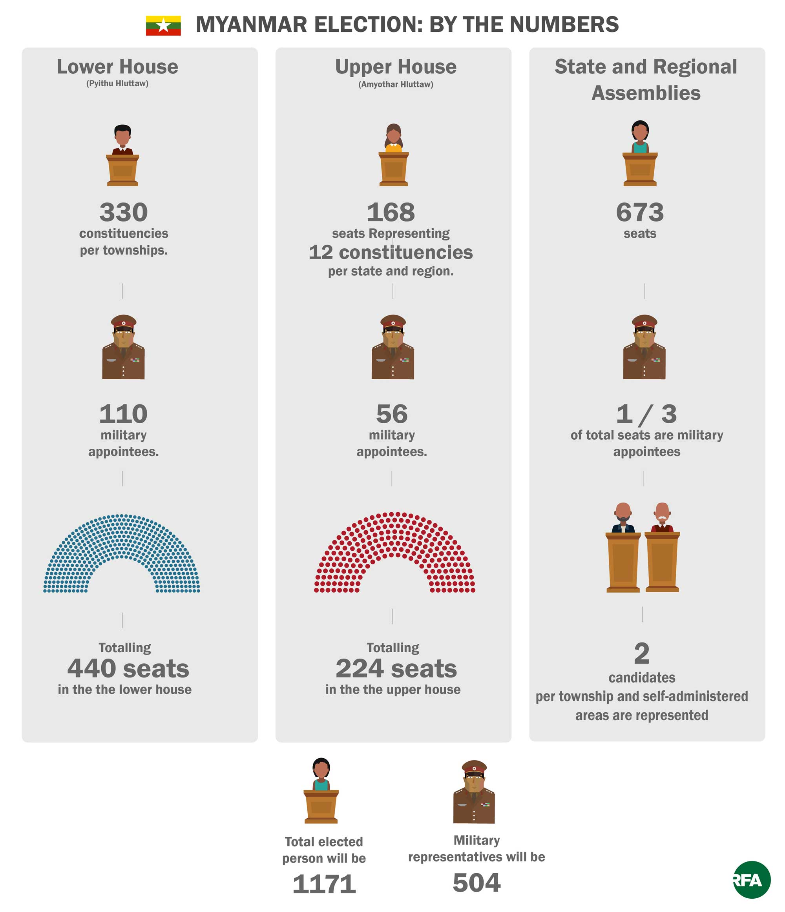

On security grounds, the Union Election Commission has cancelled voting in some townships, meaning that the following totals of parliamentary seats will not be contested on Nov. 8.
Lower House: 15 out of 330 elected seats (nine in Rakhine State, six in Shan State).
Upper House: seven out of 168 elected seats (all in Rakhine State).
State and Regional Assemblies: 30 seats out of 673 seats (27 in Rakhine State, three in Shan State).